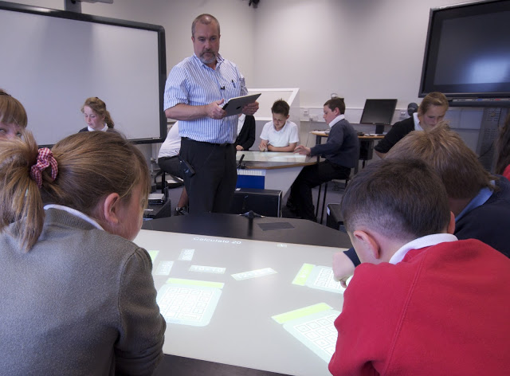

technology
New Publication
The SynergyNet team’s newest publication focuses on computer science aspects of the project:
Richardson, T., Burd, L. & Smith, S. (2013) Guidelines for supporting real-time multi-touch applications. Journal of Software: Practice and Experience. DOI: 10.1002/spe.2183
Abstract:
Multi-touch driven user interfaces are becoming increasingly prevalent because of their intuitiveness and because of the reduction in the associated hardware costs. In recognition of this trend, multi-touch software frameworks (MSFs) have begun to emerge. These frameworks abstract the low level issues of multi-touch software development and deployment. MSFs therefore enable software developers who are unfamiliar with the complexities of multi-touch software development to implement and deploy multi-touch applications more easily. However, some multi-touch applications have real-time system requirements, and at present, no MSFs provide support for the development and deployment of such real-time multi-touch applications. The implication of this is that software developers are unable to take advantage of MSFs and, therefore, are forced to handle the complexities of multi-touch and real-time systems development and deployment for themselves in an ad hoc manner. The primary consequence of this is that the multi-touch and/or real-time aspects of the application may not function correctly. In this paper, guidelines are presented for applying real-time system concepts to support the development and deployment of real-time multi-touch applications using MSFs. This serves to increase the probability that the application will meet its timing requirements while also reducing the complexity of the development and deployment process associated with multi-touch applications.
Classroom Data Collection
The SynergyNet team are in the midst of a classroom study – with two teachers with their classes each in the lab for 2 days each.
Here’s a few photos of what’s been going on.
{kind=link}
{kind=link}
{kind=link}
{kind=link}
Orchestrating the Multi-touch Classroom
In June, we conducted the first pilot study using the Kinect to run the SynergyNet classroom. The teacher bravely tried all three tools – the screen, iPad and Kinect – with a strong preference for the Kinect, despite a few issues. Check back in the next few months for further developments with this technology!
{kind=link}
Using a Kinect to run the classroom!
Analysis of Classroom Data
While the SynergyNet team have been busy creating activities for the multi-touch classroom, and bringing in groups of school children to pilot and test the activities, and provide data for the research teams, we’ve also been developing a tool to look at the video we collect.
One of the great things about the SynergyNet Classroom is that we collect video from ten cameras in the ceiling, audio from microphones embedded in the tables and screen capture from the tables themselves. This gives us a great set of data – but most commercial analysis tools can’t cope with all this video.
With Phyo Kyaw taking the lead on development, we now have a tool that can sync multiple videos, so we can see what’s going on in a group, from two angles, on their table and in the whole classroom. The transcript gets laid out on the timeline, allowing us to consider changes over time when we code the interactions.
iPad meets SynergyNet
The SynergyNet team got to bring some of their favourite things together this week – multi-touch technology, maths classes and really pretty hardware. See the photos below of Prof Steve Higgins running the mulit-touch tables and managing the classroom from his ipad, while the students worked on our newest application, NumberNet:


Networked content in use: Network Flick
Building on the Networked capabilities of the SynergyNet system, objects can be passed between tables. In the video below, the first group of school children pass images between their tables – to the excitement of the children and the SynergyNet team!
The SynergyNet Classroom
In May 2010, the four sit-to-use tables were delivered to SynergyNet, allowing us to build the first multi-touch classroom environment.
Usability Lab
Our usability lab has been operating for several months now, and has been collecting data from five experiments. We will be reporting the results of these experiments in the near future through papers intended for publication.
{kind=link}
Lumin Tables
We have received two multi-touch surfaces from Lumin Visual Technologies AG. The TEL team has already developed the necessary component to interface this hardware with the software that will form a major delivery of the project.
{kind=link}